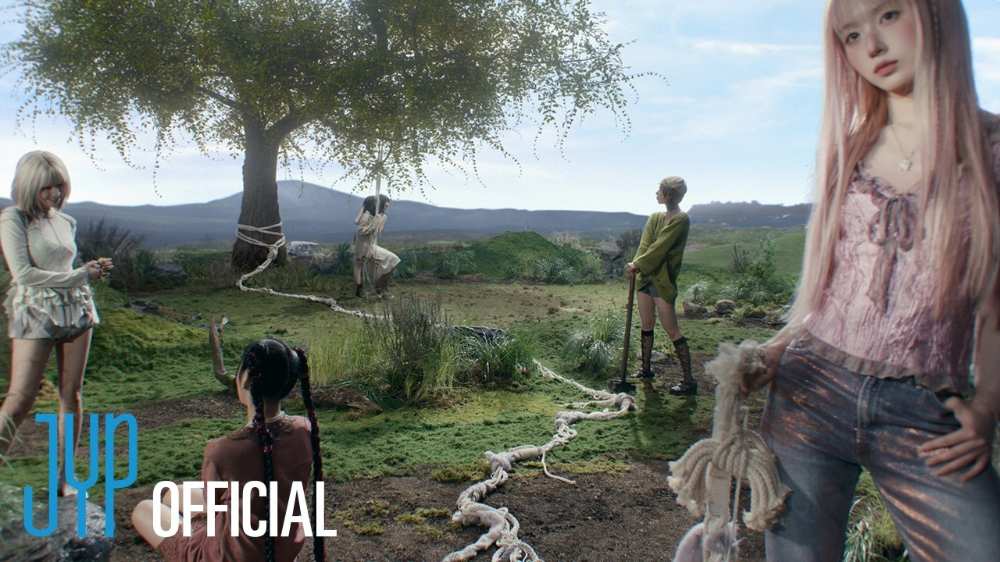

O título aqui definitivamente não é à toa. Em Heavy Serenade Dá pra sentir o peso das melodias e como o mini-álbum parece dividido em pequenas seções emocionais. Crescendo e Heavy Serenade funcionam quase como uma continuação uma da outra, criando uma atmosfera muito natural e envolvente logo no começo. O NMIXX consegue equilibrar intensidade e delicadeza de um jeito que faz o conceito do álbum realmente funcionar.

IDESERVEIT aparece como aquele hyperpop escondido no meio do projeto, trazendo uma energia diferente sem quebrar a vibe construída até ali. Já Different Girl foi o ponto mais baixo pra mim. Não chega a ser ruim, mas soa simples demais perto do restante do álbum, quase genérica em alguns momentos, mesmo tendo uma melodia com uma pegada R&B que ainda dá algum charme pra faixa.
Superior é facilmente a música épica mais espalhafatosa do mini-álbum, conversando muito bem com os singles e aumentando ainda mais a intensidade da reta final. E falando em intensidade, LOUD encerra tudo de forma excelente: melosa, agitada e barulhenta na medida certa, fechando essa serenata de maneira muito bonita.
“Heavy Serenade transforma vulnerabilidade e amor em impacto — um mini-álbum que sabe exatamente quando sussurrar e quando gritar.”
No fim, Heavy Serenade consegue transformar contraste em identidade. Mesmo com alguns momentos menos inspirados, o EP sabe construir emoção, intensidade e atmosfera de um jeito muito próprio, equilibrando delicadeza e exagero sem perder a coesão. É um projeto curto, mas que deixa impacto suficiente pra fazer valer cada minuto dessa serenata caótica do NMIXX.
TOP FAIXAS
- #1 LOUD
- #2 Crescendo
- #3 Heavy Serenade
- #4 IDESERVEIT
- #5 Superior
- #6 Different Girl
✔ O QUE É BOM
- Excelente construção emocional e épica entre as faixas.
- Produção intensa e melodias muito marcantes.
- Final forte e memorável.
✖ O QUE NÃO É BOM
- “Different Girl” perde impacto perto das outras.
- "LOUD" com certeza merecia uma ponte.
Discussão e Opiniões
A sexta faixa é simplesmente de arrepiar! O trabalho de bateria está em outro nível.